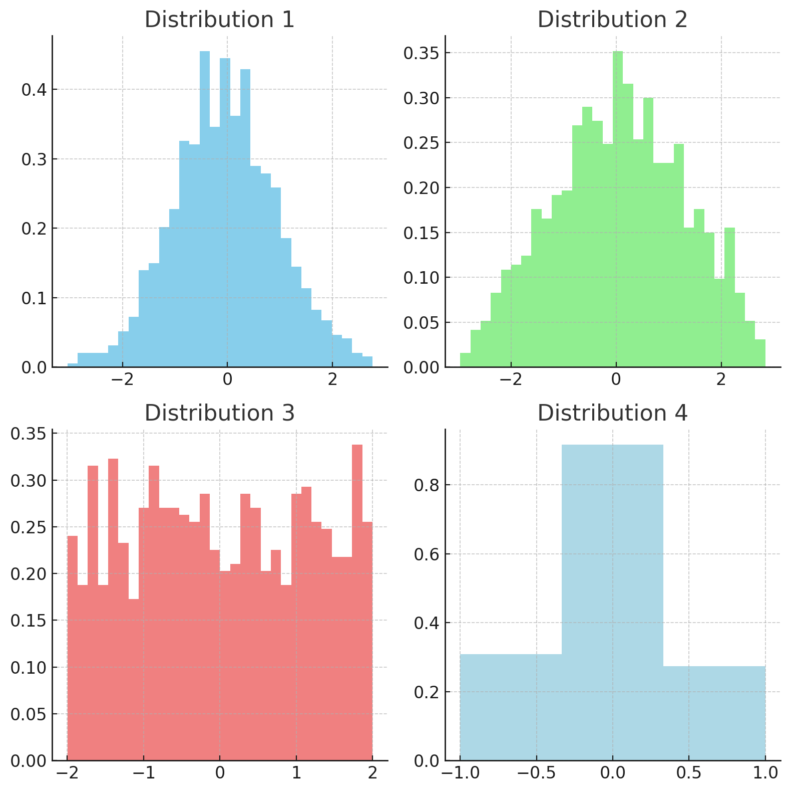

y <- c(1, 6, 4, 5, 6, 3, 8, 7)
mean(y)Exploratory Data Analysis
Numerical Summaries
The summary descriptive characteristics of a sample of objects, that is, a subset of the population, are called statistics. Sample statistics can have different values, depending on how the sample of the population was chosen. Statistics are denoted by various symbols, but (almost) never by Greek letters e.g. sample mean, \(\bar y\) and sample standard deviation, \(s\).
Measures of Central Tendency
These statistics are also sometimes referred to as measures of location.
ARITHMETIC MEAN
The most widely used measure of central tendency is the arithmetic mean or average. The population mean, \(\mu\) (“mu”) is the sum of all the values of the variable under study divided by the total number of objects in the population, Each value is algebraically denoted by a \(y\) with a subscript denotation \(i\). E.g. a small theoretical population whose objects had values 1, 6, 4, 5, 6, 3, 8, 7 would be denoted:
\[y_1 = 1,\ y_2 = 6,\ y_3 = 4,\ y_4 = 5,\ y_5 = 6,\ y_6 = 3,\ y_7 = 8,\ y_8 = 7\]
Note
Some texts will use \(X\) instead of \(x\) or \(Y\) instead of \(y\) as the symbol for a value.
We would denote the population size with a capital \(N\). In our theoretical population \(N = 8\).
The population mean, \(\mu\), would be:
\[\frac{1+6+4+5+6+3+8+7}{8}=5\]
The algebraic shorthand formula for a population mean is
\[\mu = \frac{1}{N}\sum_{i=1}^{N} y_i\]
The Greek letter \(\Sigma\) (“sigma”) indicates summation, the subscript \(i = 1\) means to start with the first observation, and the superscript \(N\) means to continue until and including the \(N\)th observation.
For the example above,
\[\sum_{i=2}^{5} y_i=y_2+y_3+y_4+y_5=6+4+5+6=21\]
To reduce the clutter, if the summation sign is not indexed, for example \(y_i\), it is implied that the operation of addition begins with the first observation and continues through the last observation in a population, that is,
\[\sum_{i=1}^{N} y_i = \sum y_i\]
The sample mean is defined by
\[\bar y = \frac{1}{n}\sum_{i=1}^{n} y_i\]
where \(n\) is the sample size.
The symbol \(\bar y\) (read “y bar”) indicates that the observations of a subset of size n from a population have been averaged. \(y\) is fundamentally different from \(\mu\) because samples from a population can have different values for their sample mean, that is, they can vary from sample to sample within the population. The population mean, however, is constant for a given population.
Again consider the small theoretical population \(1, 6, 4, 5, 6, 3, 8, 7\). A sample size of 3 may consist of \(5, 3, 4\) with \(\bar y =6\) OR it could be \(1,3,5\) with \(\bar y = 3\)
Each sample mean \(\bar y\) is an unbiased estimate of \(m\) but depends on the values included in the sample and sample size for its actual value. We would expect the average of all possible \(y\)’s to be equal to the population parameter, \(\mu\). This is, in fact, the definition of an unbiased estimator of the population mean.
The R function is mean().
The Excel command is =AVERAGE()
MEDIAN
The median is the “middle” value of an ordered list of observations. The population median \(M\) is the \(\left( \frac{N+1}{2} \right)th\) sorted value, where \(N\) is the population size. Note that this parameter is not a Greek letter and is seldom computed in practice. A sample median \(\tilde y\) (read “y tilde”) is the statistic used to approximate or estimate the population median. \(\tilde y\) is the \(\left( \frac{n+1}{2} \right)th\) sorted value where n is the sample size.
The R function is median().
y <- c(1, 6, 4, 5, 6, 3, 8, 7)
median(y)The Excel command is =MEDIAN().
MODE
The mode is the most frequently occurring value in a data set.
There is no direct function for the mode in R, the following code is an example of how it can be calculated.
mode_function <- function(x) {
uniqx <- unique(x)
uniqx[which.max(tabulate(match(x, uniqx)))]
}
# Example usage
y <- c(1, 6, 4, 5, 6, 3, 8, 7)
mode <- mode_function(y)
print(mode)The Excel command is =MODE().
OVERVIEW OF MEASURES OF CENTRAL TENDENCY:
- The mean is a purposeful measure only for a quantitative variable, whether it is continuous (e.g. height) or discrete (e.g. number of nematodes).
- The median can be calculated whenever a variable can be ranked (including when the variable is quantitative).
- The mode can be calculated for categorical variables, as well as for quantitative and ranked variables.
- The sample median expresses less information than the sample mean because it utilizes the ranks and not the actual values of each measurement.
- The median, however, is resistant to the effects of outliers. Extreme values or outliers in a sample can drastically affect the sample mean, while having little effect on the median.
Measures of Spread
Measures of central tendency alone are not sufficient to fully describe a data set. The following figure illustrates 3 distributions that all have the same mean but different levels of dispersion or spread.
library(ggplot2)
# Define the data for the three normal distributions
mean_value <- 0
std_dev_A <- 1 # Least spread
std_dev_B <- 2
std_dev_C <- 3 # Most spread
# Create a data frame for plotting
x_values <- seq(-10, 10, length.out = 300)
normal_data <- data.frame(
x = c(x_values, x_values, x_values),
y = c(dnorm(x_values, mean_value, std_dev_A),
dnorm(x_values, mean_value, std_dev_B),
dnorm(x_values, mean_value, std_dev_C)),
curve = factor(c(rep("A", length(x_values)),
rep("B", length(x_values)),
rep("C", length(x_values)))
)
)
# Generate the plot
ggplot(normal_data, aes(x = x, y = y, color = curve)) +
geom_line() +
labs(title = "Normal Distributions with Different Spreads",
x = "Value",
y = "Density") +
scale_color_manual(values = c("red", "green", "blue"),
labels = c("A: Least Spread", "B", "C: Most Spread")) +
theme_minimal()In graph A, most of the values are concentrated around the mean. It has less dispersion (or spread of values) than the other distributions. Graph C has more dispersion than the others. Its data is more “spread” out. A measure of dispersion provides some indication of the amount of variation that the data exhibits.
RANGE
The simplest measure of dispersion or “spread” is the range – the difference between the largest and smallest observations in a group of data.
The sample range is a crude and biased estimator of the population range as its dependent on the composition and size of the sample you’ve taken. [It’s unlikely that the sample will include the largest and smallest values from the population, so the sample range usually underestimates the population range and is, therefore, a biased estimator.]
The R function is max(y)-min(y)
y <- c(1, 6, 4, 5, 6, 3, 8, 7)
max(y)-min(y)The Excel command is =MAX()-MIN()
INTERQUARTILE RANGE
Rather than describe variability in terms of variation around the mean, we more directly quantify the “spread”. Just as the median divides the sample into two, the quartiles divide the sample into four groups:
- 25% of observations \(\le\) lower quartile (Q1)
- 50% of observations \(\le\) median (Q2)
- 75% of observations \(\le\) upper quartile (Q3)
The example data below (the number of days pigs take to reach bacon weight) has been sorted from lowest to highest.
98 100 100 103 105 107 110 113 115
The lower quartile Q1 is the \(\left( \frac{n+1}{4} \right)th\) sorted value = \(\left( \frac{9+1}{4} \right)th = 2.5th\) sorted value.
This means we need to obtain a weighted average of the 2nd and 3rd sorted value: \[0.5 \times 100 + 0.5 \times 100 = 100 \text{ days}\]
The upper quartile Q3 is the \(\left( \frac{3(n+1)}{4} \right)th\) sorted value = \(\left( \frac{3(9+1)}{4} \right)th = 7.5th\) sorted value.
This means we need to obtain a weighted average of the 2nd and 3rd sorted value: \[0.5 \times 110 + 0.5 \times 113 = 111.5 \text{ days}\]
The inter quartile range = Upper Quartile - Lower Quartile
\[IQR = Q3-Q1=111.5-100=11.5 \text{ days}\]
So 50% of pigs reach bacon weight within a range of 11.5 days.
The following is an example of calculations in R - note that we use the type 6 calculation and the default in R is type 7 which we generally use.
For more information see:
- Hyndman, R.J. and Fan, Y., 1996. Sample quantiles in statistical packages. The American Statistician, 50(4), pp.361-365.
y <- c(98, 100, 100, 103, 105, 107, 110, 113, 115)
quantile(y, 0.75, type = 6) - quantile(y, 0.25, type = 6) ## Type 6
## Default which we will generally use going forward
quantile(y, 0.75) - quantile(y, 0.25) PERCENTILES
The 5th and 95th percentiles cut off 5% of the most extreme values in the distribution of values for the sample. The 1st and 99th percentiles may be similarly defined. As with quartiles, a list of percentiles may be far more informative than the standard deviation for summarizing the spread of values about the mean or median, especially when the spread is asymmetrical.
VARIANCE
In general, we have \(n\) observations, so the general formula for the sample variance is
\[s^2 = \frac{1}{n-1}\sum_{i=1}^{n} (y_i - \bar{y})^2\]
The units for the variance are always the units of the original measurement squared. If units of measurement were kg (e.g. body weight), then the variance would have units \(kg^2\).
STANDARD DEVIATION
To have a measure of variability with the same units as the original measurement, we take the square root of the variance. This is the standard deviation of the observations (usual symbol is s).
Sample standard deviation,
\[s = \sqrt{\frac{1}{n-1}\sum_{i=1}^{n} (y_i - \bar{y})^2}\] DEGREES OF FREEDOM
The value n-1 in the above equations for variance and standard deviation is referred to as the degrees of freedom (df). Ashcroft & Pereira (2003) explain this concept in the following way.
“The degrees of freedom in our analysis is the number of observations that are allowed to vary if our sample characteristic is to estimate precisely the population characteristic. For instance, when we are estimating just one population characteristic like the population variance and out sample size is n, the degrees of freedom is n-1 since control of just one observation (i.e. the rest are free to vary) is all that is required to make our sample variance exactly equal to the population variance.
As an example, suppose we have a sample of 5 observations \((x_1, x_2, x_3, x_4, x_5; n=5)\) from a population whose mean is 6. Observe in the table below how control of the last observation can make our sample mean exactly equal to the population mean of 6 when the first 4 observations are free to change their values.
| x1 | x2 | x3 | x4 | (Make x5) | Sample mean |
|---|---|---|---|---|---|
| 2 | 4 | 7 | 8 | (9) | 6 |
| 4 | 6 | 5 | 7 | (8) | 6 |
| 3 | 7 | 4 | 9 | (7) | 6 |
Here we see that a group of 5 observations being used to estimate a single population characteristic has 4 degrees of freedom. In general, when k population characteristics are being estimated from n observations, the degrees of freedom of the analysis is n-k.”
COEFFICIENT OF VARIATION
The coefficient of variation (CV) is used is used to aide in comparing the variability of two samples that have widely differing means. It is usually expressed as a percentage, and has no units.
\[CV = \frac{s}{\bar{y}} \times 100\%\]
Tabular Summaries
Tables of means
Tables are a way of organizing the data collected or providing a summary presentation of the data. The two most common types of tabular summaries you will encounter are tables of means and frequency tables.
An example of a table of means is the following table that shows the mean number of sedge plants, Carex flacca, found in 800 sample quadrats in an ecological study of grasses. Each quadrat was randomly assigned to one of four treatments: control, low, medium, and high. The table shows the mean number of sedge plants found in each treatment. We will simulate the data for this example.
library(dplyr)
library(kableExtra)
set.seed(123) # For reproducibility
# Simulate data
quadrats <- data.frame(
Treatment = factor(rep(c("Control", "Low", "Medium", "High"), each = 200)),
SedgePlants = c(
rpois(200, lambda = 5), # Assuming a Poisson distribution for count data
rpois(200, lambda = 10),
rpois(200, lambda = 15),
rpois(200, lambda = 20)
)
)
quadrats <- quadrats %>%
group_by(Treatment) %>%
summarise(MeanSedgePlants = mean(SedgePlants))
kable(quadrats)Frequency Tables
An example of a tabular summary is the following table that shows the number of sedge plants, Carex flacca, found in 800 sample quadrats in an ecological study of grasses. Each quadra
Sedge plant data sourced from Glover & Mitchell (2002)
| Plants/quadrat \((y_i)\) | Frequency \((f_i)\) |
|---|---|
| 0 | 268 |
| 1 | 316 |
| 2 | 135 |
| 3 | 61 |
| 4 | 15 |
| 5 | 3 |
| 6 | 1 |
| 7 | 1 |
This table can be further organized into a relative frequency \((f_i/n \times 100)\) table by expressing each row as a percentage of the total observation or into a cumulative frequency distribution by accumulating all observations up to and including each row i.e. \(\Sigma^r_{i=1}f_i\) where \(r\) is the row number. The cumulative frequency distribution could be further manipulated into a relative cumulative frequency distribution by expressing each row of the cumulative frequency distributions as a percentage of the total i.e. \(\Sigma^r_{i=1}f_i/n \times 100\)
Graphical Summaries
Bar Graphs and Histograms
Frequency tabulations can be represented as a graph of frequency (raw or percentage) against the measurement variable. Discrete data are sometimes expressed as a bar graph where bars are spaced equidistantly along the horizontal axis. Figure 1.2 is a relative frequency histogram (also known as a percentage frequency histogram) of the sedge plant data. The data represents data from sedge plant counts in 800 1m x 1m quadrats Ideally this data set (since it is discrete) would be plotted as a bar graph.
library(tidyverse)
sedge <- read_csv("data/Sedge.csv", show_col_types = FALSE)
ggplot(sedge, aes(x = Plants)) +
geom_histogram(aes(y = after_stat(count)/sum(after_stat(count)) * 100), bins = 8) +
ylab("Percentage") +
xlab("Number of plants per quadrat")Continuous measurements are free to take any whole or fractional number within their range e.g. plant height, soil pH, concentration of nitrates in a water sample. Histograms (with bars touching each other) are the norm for continuous data.
bentgrass <- read_csv("data/Bentgrass.csv", show_col_types = FALSE)
ggplot(bentgrass, aes(x = Root_length_mm)) +
geom_histogram(bins = 20) +
xlab("Root length (mm)")A histogram can give nearly complete information about the distribution of data. For example, from Figure 1.3 above (that shows a fairly symmetric distribution) we can estimate that the mean ≈ 95 mm (the centre of the data) and standard deviation ≈ 15 mm (since for symmetric distributions approximately 95% of data lies within 2 standard deviations either side of the mean i.e. a total of 4 standard deviations across 95% of the data values).
A histogram needs a relatively large sample size for it to be informative (i.e. 30 or more data values).
Boxplots
Boxplots show the shape of the distribution of data very clearly and are also helpful in identifying any outlying (or extreme) values.
Example 1 Creeping bentgrass turf was laid in an experiment to assess root growth. Eighty (80) “plugs” were randomly sampled 4 weeks after laying. Root growth was measured by averaging the length (mm) of the ten longest roots in each plug.
ggplot(bentgrass, aes(x = Root_length_mm)) +
geom_boxplot() +
xlab("Root length (mm)")Notes on boxplots:
- 50% of the data are contained within the box (inter quartile range).
- Whiskers are extended to a maximum of 1.5 x IQR
- Any data values beyond these maximum whisker lengths are plotted individually, usually by an asterisk or dot \(\Rightarrow\) these may be outliers and distort the results of any further analysis
- A boxplot gives useful summary of the shape of the data distribution e.g. Is it symmetric or skewed? Are there any outliers?
- Boxplots do not need as many data values (as some other graphs such as histograms and dot plots) for them to be informative.
GUIDELINES FOR MAKING A BOXPLOT
We will use the gravimetric water content of soil (%) from Method A in the irrigation data set to illustrate how a boxplot is constructed. In this example we have n = 10 observations. We can use the R function, summary() to calculate some of the important values in a boxplot such as Q1, Q2, and Median.
soil_water <- data.frame(water_content = c(7.5, 9.0, 9.3, 10.4, 10.4, 10.6, 10.7, 11.6, 12.1, 12.8))
summary(soil_water$water_content)Step 1: Determining the Box:
- The quartiles (Q1: 1st Qu. & Q3: 3rd Qu.) then become the basis for the “box”
- The median is shown as a vertical line through the box.
Step 2: Determining (potential) outliers
- Calculate IQR = Inter-quartile range = 11.375 - 9.575 = 1.8
- Calculate Q1 - 1.5 x IQR = 9.225 - 1.5 x 1.8 = 6.875 Since there are no observations smaller than 6.875, there are no low-valued outliers.
- Calculate Q3 + 1.5 x IQR = 11.375 + 1.5 x 1.8 = 14.075 Since there are no observations greater than 14.075, there are no high-valued outliers.
- If any values were flagged to be (potential) outliers, they are plotted as individual points on the boxplot, usually as a “*” or \(\bullet\).
Step 3: Determining the “whisker” lengths
- Extend the whisker from the lower end of the box (Q1) to the smallest value that is not an outlier, i.e. to the smallest value greater then Q1 - 1.5 x IQR. That is, the whisker here will be extended down to the minimum value which is 7.5.
- Extend the whisker from the upper end of the box (Q3) to the largest value that is not an outlier, i.e. to the greatest value smaller then Q3 + 1.5 x IQR. That is, the whisker here will be extended up to 12.8.
Using these values, the following boxplot is obtained:
ggplot(soil_water, aes(x = water_content)) +
geom_boxplot() +
xlab("gravimetric water content of soil (%)")Scatterplots
Scatter plots are used to represent graphically the relationship between two variables. The extent and nature of the relationship between two (or more) variables is quantified through tools such as correlation and regression. This will be covered in later chapters.
Shapes of Distributions
Symmetric
This is a distribution such that the left hand side of the frequency polygon is a mirror image of the right hand side. For symmetrical distributions, the mean, median and mode all have the same value. Substantial differences in these three statistics could provide valuable information about the data set (as we’ll see in the sections on positively and negatively skewed distributions). Some examples of symmetric distributions appear below.

Example: Creeping bentgrass: root growth (mm)
summary(bentgrass)Note that the mean and the median are similar (93.9, and 93.0 mm respectively). This is indicative of symmetric data. The boxplot and histogram below show that the data is symmetric about the mean. You will notice from the boxplot that there is one high value outlier indicated by the “x” at the right hand side of the graph. The “4” indicates that this is the 4th observation in the data set i.e. the value 135 mm.
library(patchwork)
p1 <- ggplot(bentgrass, aes(x = Root_length_mm)) +
geom_boxplot() +
xlab("Root length (mm)")
p2 <- ggplot(bentgrass, aes(x = Root_length_mm)) +
geom_histogram(bins = 20) +
xlab("Root length (mm)")
p1+p2Positively Skewed
For right-skewed distributions we find that the mode (if one exists) is always less than the median and the median is always less than the mean. Example: As part of an evaluation of a clean-up of a contaminated site, 100 soil samples were taken randomly across an area and the level of 1,2,3,4 Tetrachlorobenzene was recorded in parts per billion (TcCB, ppb).
The following descriptive analysis was undertaken.
tccb <- read_csv("data/TcCB.csv", show_col_types = FALSE)
summary(tccb)p1 <- ggplot(tccb, aes(x = TcCB_ppb)) +
geom_boxplot() +
xlab("TcCB concentration (ppb)")
p2 <- ggplot(tccb, aes(x = TcCB_ppb)) +
geom_histogram(bins = 20) +
xlab("TcCB concentration (ppb)")
p1+p2The distribution is highly positively skewed (right skewed): there are extreme outliers at high levels. This is also demonstrated by the mean (1.412 ppb) being substantially greater than the median (0.570 ppb).
Negatively Skewed
For left-skewed distributions we find that the mode is greater than the median and the median is greater than the mean.
Example: - The age of onset of osteoarthritis was recorded in 13 dogs. - The majority of the values cluster around the 10-13 age range, which represents the more common onset age for the chronic condition in older dogs. - There are also some lower values representing the less common earlier onset of the condition.
arthritis <- read_csv("data/Arthritis.csv", show_col_types = FALSE)
summary(arthritis)p1 <- ggplot(arthritis, aes(x = AgeAtOnset)) +
geom_boxplot() +
xlab("Age at onset (years)")
p2 <- ggplot(arthritis, aes(x = AgeAtOnset)) +
geom_histogram(bins = 5) +
xlab("Age at onset (years)")
p1+p2The distribution is negatively skewed (left skewed): there are some outliers at low levels. This is also demonstrated by the mean (9.7 years) being marginally less than the median (11.1 years).
Statistics of Shape
There are two statistics useful for describing shape.
SKEWNESS
Skewness is another name for asymmetry which means that one tail of the frequency distribution is drawn out more than the other. A skewness of zero implies a symmetrically shaped histogram, a negative value implies skewness to the left and a positive value implies skewness to the right.
library(moments)
skewness(bentgrass)
skewness(tccb)
skewness(arthritis)KURTOSIS
Kurtosis is a measure of how “peaked” (leptokurtic) a frequency distribution is or how “flattened” (platykurtic) it is. A negative value indicates platykurtosis (or flatness), and a positive value indicates leptokurtosis (peakedness).
kurtosis(bentgrass)
kurtosis(tccb)
kurtosis(arthritis)BIMODAL
Note: Bimodal distributions expected indicate a mixture of samples from two populations (e.g. weights of male and females). While the mode is not often used in biological research, reporting the number of modes, if more than one, can be informative.
Normality versus Non-Normality (in the Descriptive Statistics Context)
Normality
Most natural groups of objects show variation. Humans differ in height, even if of the same sex, race and age. In many instances, measurements of similar objects vary about their mean according to a well-defined function, the normal or Gaussian distribution function.
The normal distribution has the following characteristics:
- It is symmetric about its mean, median and mode. Hence a normal distribution has a skewness of zero.
- It is bell-shaped, with a kurtosis of zero (recall kurtosis is “flatness”).
- It is a continuous curve defined for values from minus infinity to plus infinity.
- It is completely defined by its mean and standard deviation. That is, if you know the mean and standard deviation of the normal curve, you can calculate its exact equation.
- PDF for normal distribution: \(f(x) = \frac{1}{\sqrt{2\pi\sigma^2}}e^{-\frac{(x-\mu)^2}{2\sigma^2}}\)
- 95% of observations fall in the range defined by the mean plus or minus 1.96 standard deviations and 99% fall in the range defined by the mean plus or minus 2.58 standard deviations.
Summary statistics for a sample drawn from a normally distributed population would usually include the range of values encountered, the arithmetic mean, the standard deviation and the size of the sample from which these statistics were calculated. All other information, including the frequency tabulation, the mode, median, percentiles, sample skewness and kurtosis would be superfluous.
We will look at the normal distribution in detail later in this section.
Non-Normality
For data that do not conform to the theoretical normal distribution, the situation is more complex. No longer will the mean and standard deviation suffice in order to reconstruct the frequency distribution of the raw data. No longer would we expect only 5% of values to lie outside the mean plus or minus 1.96 standard deviations. A more detailed description of the characteristics of non-normal data is required.
Substantial differences between the model, median and arithmetic mean are apparent when a skewed distribution is considered. Clearly the three averages can have distinctly different values. Which is the most appropriate average? The mean is markedly affected by outlying observations whereas the median and mode are not.
The difference between the mean and median has important practical consequences for analysis of data that contains aberrant outlying values (perhaps because of errors at the time of measurement or during transcription in preparing the data). Such errors, if they go unnoticed, can seriously affect an analysis.
Most modern statistical packages perform various tests to determine if your data are likely to have been drawn from a normally distributed population. We’ll look at these later.